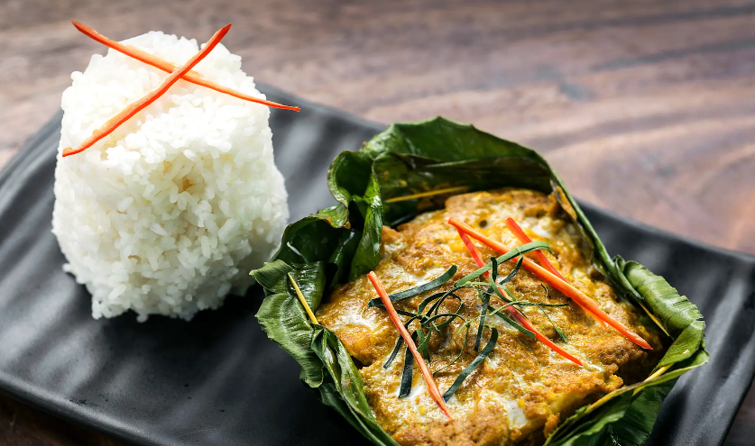
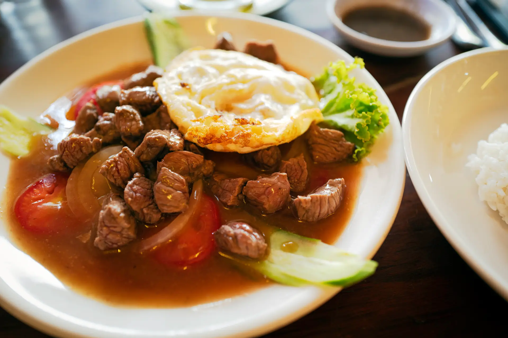

Cambodian food includes popular dishes such as Amok, a creamy fish curry cooked in banana leaves, and Lok Lak, a savory stir-fried beef dish served with rice. These meals are known for their rich flavors and use of fresh herbs and spices, making Cambodian cuisine unique in Southeast Asia. Learn more at Tourlane


Image source: Tourlane